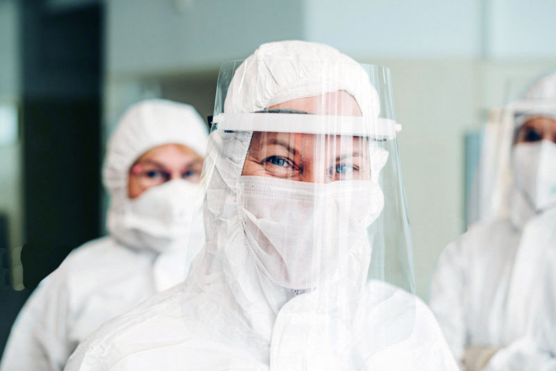
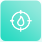

О НАШЕЙ КОМПАНИИ
Компания «КОЛЛАБ» предоставляет уникальный в Украине сервис — выезд мобильной лаборатории 24/7 домой к Вашим сотрудникам или в офис всего в один клик.
Мы предоставляем услугу по забору материала для проведения ПЦР тестирования на COVID-19 c возможностью выбрать лабораторию, которой вы доверяете.
Если нужно незамедлительно узнать о наличии вируса у Ваших сотрудников - закажите экспресс тест на выявление антигена к COVID-19 (результат через 30 минут).
Более подробно об этих тестах в разделе «Вопросы и ответы» (FAQ).
Мы предоставляем услугу по забору материала для проведения ПЦР тестирования на COVID-19 c возможностью выбрать лабораторию, которой вы доверяете.
Если нужно незамедлительно узнать о наличии вируса у Ваших сотрудников - закажите экспресс тест на выявление антигена к COVID-19 (результат через 30 минут).
Более подробно об этих тестах в разделе «Вопросы и ответы» (FAQ).

Выезд мобильной лаборатории для тестирования корпоративных клиентов возможен по всей территории Украины.
В штат нашей мобильной лаборатории входят только опытные фельдшера, медсестры и логисты. Весь персонал прошел полную подготовку по забору и транспортировке биоматериала для тестирования на COVID-19, в соответствие с международными стандартами, а также с регламентом МОЗ Украины.
В штат нашей мобильной лаборатории входят только опытные фельдшера, медсестры и логисты. Весь персонал прошел полную подготовку по забору и транспортировке биоматериала для тестирования на COVID-19, в соответствие с международными стандартами, а также с регламентом МОЗ Украины.
8 ПРИЧИН ЗАКАЗАТЬ
УСЛУГУ У НАС
УДОБСТВО
Оформите онлайн-заявки 24/7 «в 1 клик» и наш менеджер свяжеться с Вами.
ОПЕРАТИВНОСТЬ
Время приезда медсестры — в течении 12 часов после оформления заявки на сайте. Быстрое получение результата: 24 часа — в стандартном режиме, 6 часов — в ускоренном режиме.
ДОСТУПНОСТЬ
Мы проводим тестирование на дому или в офисе. Бригады медсестер работают круглосуточно — вы можете выбрать наиболее подходящее время для сдачи анализов и вызвать фельдшера для забора материалов на дом к сотрудникам или в офис.
БЕЗОПАСНОСТЬ
Все используемые инструменты стерильны, весь персонал выезжает на вызов в специальном защитном костюме. Также вы можете сдать анализ в специально оборудованном автомобиле, на котором приезжает мобильная бригада.

ТОЧНОСТЬ
Четкое соблюдение процедуры забора биоматериала и условий его транспортировки.
НАДЕЖНОСТЬ
Мы сотрудничаем только с лицензированными медицинскими лабораториями — вы можете выбрать, в какое из этих учреждений отправить ваш биоматериал для анализа.
ВЫГОДА
Специальные условия для корпоративный клиентов. С нами Вы экономите время, деньги и контролируете ситуацию в своей компании.
ГАРАНТИЯ
Наша компания имеет все необходимые разрешительные документы, а медицинский персонал — соответствующее медицинское образование, поэтому вы можете рассчитывать на самое высокое качество получаемых услуг.
ПОКАЗАНИЯ К ТЕСТИРОВАНИЮ
НА COVID-19
- Для исключения вероятности заражения, если вы или кто-то в коллективе вашей компании контактировал с человеком, у которого выявлен коронавирус.
- Для прибывающих из за границы мы проводим тестирование, результаты которого лаборатория передает в ЦГЗ и в приложение «Дій вдома».
- При симптомах коронавирусной инфекции (повышенная температура тела, сухой кашель, слабость, одышка, потеря обоняния и возможности различать вкусы, мышечная боль, заложенность носа и другие типичные признаки ОРВИ).
- Перед выездом в определенный ряд стран требуется тест ПЦР на английском языке и вы можете получить его, указав такую необходимость
- При госпитализации в стационар и перед плановыми операциями.
ЧАСТО ЗАДАВАЕМЫЕ
ВОПРОСЫ
Как проводится работа с корпоративными клиентами?
Мы предоставляем услуги как на дому, так и в офисе. Для большей дискретности вы можете вызвать мобильную бригаду, которая не будет заходить в офисное помещение, а по приезду пригласит вас в пункт мобильного забора в специально оборудованном автомобиле.
Сколько времени уйдет на проверку 100 сотрудников нашего офиса?
Для оформления заказа для более 50 сотрудников компании наш менеджер организует выезд нескольких бригад одновременно, а также обустроит стерильное место у вас в офисе, в котором будет проходить забор. Для оптимизации процесса все сотрудники будут зарегистрированы на тестирование по предоставленным спискам.
Можно ли вызвать бригаду в офис анонимно
Мы предоставляем услуги как на дому, так и в офисе. Для большей дискретности вы можете вызвать мобильную бригаду, которая не будет заходить в офисное помещение, а по приезду пригласит вас в пункт мобильного забора в специально оборудованном автомобиле.
Как подготовиться к тесту?
Правила подготовки до тестирования: за 30 минут до взятия мазков из ротоглотки (зева) не употреблять пищу, не пить жидкость, не чистить зубы, не полоскать рот/горло, не жевать жевательную резинку и не курить. Важно! За 2 часа до взятия мазков из носа не закапывать капли, не применять спреи и не промывать нос. Перед взятием мазка, при наличии обильных выделений из носа, необходимо очистить носовые ходы — сильным выдохом удалить слизь из носа (высморкаться)..
Откуда берут мазок
Мазок берется из ротоглотки либо из носа.
Что такое экспресс-тест на определение антигена коронавируса (COVID-19)?
Экспресс-тест «Standart Q Covid-19 Ag для определения антигена» для выявления антигена коронавируса.
Экспресс-тест на выявление антигена коронавируса (COVID-19) используется как предварительное скрининговое обследование, и является вспомогательным методом диагностики коронавирусной инфекции у пациентов с клиническими симптомами SARC-CoV-2 уже с первого дня появления симптомов.
Преимущества экспресс-теста на коронавирус:
Получив отрицательный результат вероятность того, что вы заболели на момент взятия образца существенно снижается, но, к сожалению, не может быть исключена полностью.
Тест-система STANDARD Q COVID-19 Ag — это быстрый хроматографический иммуноанализ для качественного определения антигена SARC-CoV-2, присутствующего в носоглотке человека.
Как подготовиться к экспресс-тестированию на COVID-19 (исследование отделяемого носоглотки на SARS-COV-2):
Экспресс-тест на выявление антигена коронавируса (COVID-19) используется как предварительное скрининговое обследование, и является вспомогательным методом диагностики коронавирусной инфекции у пациентов с клиническими симптомами SARC-CoV-2 уже с первого дня появления симптомов.
Преимущества экспресс-теста на коронавирус:
- Ранняя диагностика с первого дня появления симптомов.
- Готовность результата теста (анализа) в течение 30 минут
- Высокая чувствительность и специфичность метода.
- Нет возрастных ограничений.
- Нет необходимости брать кровь!!!
Получив отрицательный результат вероятность того, что вы заболели на момент взятия образца существенно снижается, но, к сожалению, не может быть исключена полностью.
Тест-система STANDARD Q COVID-19 Ag — это быстрый хроматографический иммуноанализ для качественного определения антигена SARC-CoV-2, присутствующего в носоглотке человека.
Как подготовиться к экспресс-тестированию на COVID-19 (исследование отделяемого носоглотки на SARS-COV-2):
- За 4 часа до сдачи экспресс-теста на COVID-19 нужно воздержаться от еды, питья, курения (в том числе от кальяна), жевательной резинки, промывания носа назальными каплями.
- В течение 6 часов перед сдачей теста на COVID-19 нельзя применять ингаляционный ввод лекарств и препараты для рассасывания.
Чем отличается экспресс-тест на COVID-19 от ПЦР теста на на COVID-19?
Экспресс-тест на антиген COVID-19 определяет белковую субстанцию коронавируса, так называемый антиген, который вызывает выработку антител к вирусу в организме человека и делать его можно уже с первого дня заболевания. (Есть экспресс-тесты, которые определяют антитела к коронавирусу, но такие тесты необходимо делать с 5- 7 – 14 -й день от начала симптомов, чтобы в организме уже начали вырабатываться защитные антитела.)
ПЦР- тест определяет РНК вируса, что также позволяет выявить коронавирус с первого дня появления симптомов, а также при бессимптомном наличии вируса в организме.
Экспресс- тест на определение антигена коронавируса (COVID-19) выполняется на месте в течение 30 минут. ПЦР метод – определяет РНК вируса и требует использования специальных приборов и дополнительного времени.
И тот и другой тест можно использовать с первых дней появления симптомов коронавируса, но, чтобы подтвердить заболевание коронавирусом все – таки придется сделать ПЦР согласно стандартам и требованиям МОЗ Украины, так как экспресс-тест является вспомогательным тестом в диагностике COVID-19.
И при экспресс-тесте, и для ПЦР исследования берется мазок из носа и зева (назофарингеальный мазок), и не требуется забор венозной крови.
ПЦР- тест определяет РНК вируса, что также позволяет выявить коронавирус с первого дня появления симптомов, а также при бессимптомном наличии вируса в организме.
Экспресс- тест на определение антигена коронавируса (COVID-19) выполняется на месте в течение 30 минут. ПЦР метод – определяет РНК вируса и требует использования специальных приборов и дополнительного времени.
И тот и другой тест можно использовать с первых дней появления симптомов коронавируса, но, чтобы подтвердить заболевание коронавирусом все – таки придется сделать ПЦР согласно стандартам и требованиям МОЗ Украины, так как экспресс-тест является вспомогательным тестом в диагностике COVID-19.
И при экспресс-тесте, и для ПЦР исследования берется мазок из носа и зева (назофарингеальный мазок), и не требуется забор венозной крови.
Что такое анализ на коронавирус методом ПЦР?
«Золотым стандартом» выявления коронавирусной инфекции является анализ методом ПЦР, когда выявляют РНК (нуклеиновую кислоту) вируса с помощью специальных приборов в специально оборудованной для этого метода ПЦР-лаборатории. Этот метод является самым точным в определении коронавируса. Анализ ПЦР чувствителен на самых ранних этапах инфицирования, даже когда еще нет признаков заболевания, и даже при бессимптомном носительстве вируса.
Для проведения анализа берут мазок с ротоглотки или носоглотки. Перед этим рекомендуется в течение 3 часов воздерживаться от употребления пищи, питья, курения и полоскания горла.
Срок получения результата – от 6 до 24 часов
Результаты ПЦР-теста можно получить на украинском или английском языке без дополнительной оплаты.
Для проведения анализа берут мазок с ротоглотки или носоглотки. Перед этим рекомендуется в течение 3 часов воздерживаться от употребления пищи, питья, курения и полоскания горла.
Срок получения результата – от 6 до 24 часов
Результаты ПЦР-теста можно получить на украинском или английском языке без дополнительной оплаты.
Я сдал анализ, получил результат, но приложение «Дій Вдома» не перестает требовать данные о моей геолокации и селфи.
Лаборатория передает все данные результатов тестов в Центр Общественного Здоровья Украины. И те в свою очередь снимают с самоизоляции и отключают приложение «Дій Вдома». Перед регистрацией на тест обязательно убедитесь, на какой номер телефона вы установили приложение « Дій Вдома». Этот номер телефона является идентификатором, поэтому важно, чтобы это был один и тот же номер. В случае дополнительных вопросов рекомендуем обращаться напрямую: Контактные данные Центр общественного здоровья (ЦОЗ) Украины: Тел: +380 44 425 43 54, эл. почта: info@phc.org.ua. Служба поддержки приложения «Дій вдома»: https://chat.diia.gov.ua
ЗАПОЛНИТЕ ФОРМУ!
Заполните поля ниже и мы свяжемся с Вами в ближайшее время!